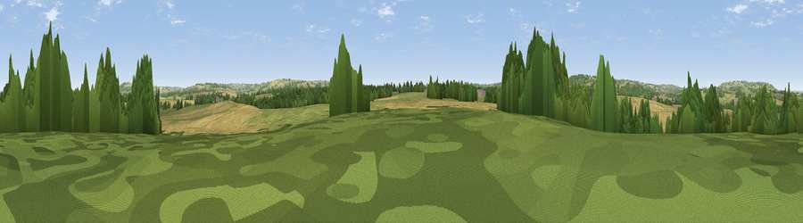

Viewpoint near Great Wolford
#42174 in England · top 94% of its area beats it · near Great Wolford · access?Where it is
The exact computed spot (SP 22875 34725). Click the marker for map links.
Public access: no public right of way or access land is recorded at this exact spot — it may be on private land. Computed from Natural England's CRoW access layer and OpenStreetMap rights of way — not the legal definitive map. Always verify locally.
The view, rendered

A 360° render of this exact spot computed from the terrain model, tree cover and land cover — summer colours, afternoon light, calibrated against photographs of famous viewpoints. Real trees, hedges and buildings will differ in detail.
The panorama
Grey silhouette: terrain skyline in each direction (720 bearings, Earth curvature and refraction included). Dashed green: skyline with trees (+15 m) and buildings (+8 m) as obstacles. Blue strip: how far the ground is visible on each bearing.
Where the view opens
Wedge length = distance to the farthest visible ground on that bearing (vegetation-aware). Rings at 10, 25 and 50 km.
What fills the view
46% cropland · 38% grassland · 15% woodland ·
Angular shares of the visible panorama (visual magnitude), not map area. Landscape diversity 0.45 (0–1 Shannon).
Key numbers
More beautiful places nearby
The staircase of upgrades: each row has a higher view potential than everything closer. Driving times are estimates from straight-line distance, calibrated against real road routing — check an actual route before setting out.
| Place | Direction | Drive | Score |
|---|---|---|---|
| Viewpoint near Stretton on Fosse | NNE · 4 km | ~9 min | 46.5 |
| Viewpoint near Aston Magna | W · 4 km | ~10 min | 59.5 |
| Viewpoint near Little Compton | SE · 6 km | ~13 min | 67.2 |
| Viewpoint near Upper Brailes | NE · 8 km | ~16 min | 68.5 |
| Viewpoint near Ilmington | NNW · 8 km | ~16 min | 72.6 |
| Viewpoint near Chipping Campden | WNW · 10 km | ~20 min | 73.3 |
| Viewpoint near Chipping Campden | NW · 10 km | ~20 min | 76.3 |
| Broadway Hill | W · 12 km | ~22 min | 77.7 |
52.01049, -1.66813 · source: screening · position refined by local search. Computed location — check access rights before visiting.